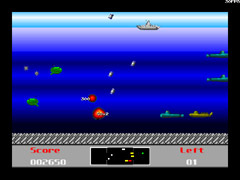
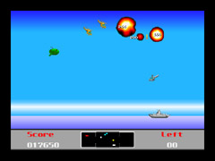
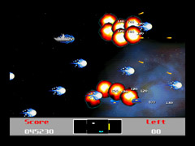
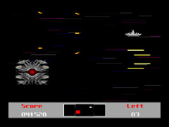

 |
 |
 |
 |
| 海面 | 空面 | 宇宙面 | ボス面 |
動作環境
Microsoft Windows95以降, Microsoft WindowsNT4.0 ServicePack3以降、
256色発色可能で640x480dots以上のディスプレイ環境が必要です。(ウインドウモードなら 65535色以上で800x600以上推奨)
Microsoft DirectX 3以降がインストールされていると、フルスクリーンや DirectSound などで快適なプレイができます。
『Story of Super Depth』 written by tacox
西暦2011年。比類なき外宇宙からの攻撃により、人類は死滅した。
いや、正確に言えば、死滅したかに見えた、というべきであろう。過去に日本と呼ばれた国家の領土のなかで、最南端に位置する孤島の沖合いに構築された地下シェルターのなかに、人類はその比類なき系譜を辛うじてつなぎとめていたのである。
このシェルターには、かつて比類なきバッタ屋として名をはせたひとりの老人と、3人の若い男、ふたりの若い女性、そして猫が623匹に
犬が117匹、みみずが1000匹、羊が65535匹いた。この村社会の長ともいうべき老人は、もはや命の育むにふさわしくなくなった地球から脱出すべく、比類なき宇宙戦艦の建造に精を出していた。もちろん、人間5人と動物67275匹らも老人の元で第2の地球を探す旅に出るべく、懸命に働いていた。
数年後、かれらの比類なき努力により待望の比類なき宇宙戦艦は完成した。老人はその黒光りするボディを眺め、目に涙を浮かべ、ジュンとしながらこうつぶやいた。「この船をヤマ卜(ぼく)と名付ける」。
およそ70年前、このシェルターの近くで轟沈した、かの巨大戦艦にあやかっての命名ではあったが、もはや老人の脳は溶ろけつつあり、なにやら比類なく間違ったネーミングがなされたのであった。
かくして、比類なき宇宙戦艦の、あてどもない旅が始まる。号砲一発轟かせ、いまヤマ卜が立つ!!
インストール
アンケートフォームで回答していただくと、セットアッププログラムがダウンロードできます。
SuperDepth のセットアップには２段階の手順があります。
- ダウンロードしたセットアッププログラムで、オンラインアップデートで必要なプログラムのインストール
- SuperDepth 専用のアップデートプログラムの実行
この２段階の手順が必要になります。
２番目の手順は１番目のセットアップを行うと、スタートメニューに Bio_100% のグループができて、さらにその中に SuperDepth というグループができますので、その中にある「オンラインアップデート」の項目を実行してください。但し、このオンラインアップデートを実行するには、インターネットに接続されている必要がありますので、あらかじめ接続しておいてください。
実行すると、サーバーより最新データをすべてダウンロードが開始されます。完了しますと、アップデート情報が起動されます。
これでインストールは完了です
ゲームの実行
スタートメニューより SuperDepth を実行させてください。セットアップで、デスクトップにショートカットを作成したひとはそれをクリックすれば楽です。
あそびかた、ゲーム内容
起動するとオープニング画面になります。テンキーの 2,8 やカーソルキーで、ゲームスタート、ハイスコア画面、終了等を選択できます。
Z,スペース等で実行してください。ゲーム中は ESC を押すことによってポーズをかけることが出来ます。再び ESC を押せばゲームに復帰できます
内容はふつうのシューティングゲームです。テンキーの 2,4,6,8 やカーソルキー等で戦艦ヤマ卜を動かし、Z,Xで攻撃です。ジョイスティックでもok。
画面下部にレーダーがあるのでそれを見てうまく攻撃してください。
ステージは4種類に分かれていて、海面、空面、宇宙面、ボス面があります。海面と空面では横移動しかできません。全12面をクリアーするとエンディングが用意されています:-) でも現在は４面までしか遊べません
ある特定のキャラ(レーダー上では白く点滅)をやっつけるとアイテムを出すことがあります。
アイテムは、
青色: スピードアップ
赤色: 連射数アップ
緑色: 弾のスピードアップ
紫色: 3WAY SHOT (海面では WAVE BOMB)
黄色: フラッシュボム
水色: フルパワー
白色: 1UP
の7種類も用意されてます。
アイテムを取ると強くなりますが、敵の攻撃も厳しくなってきます。
さあ!!感動のエンディングへ突撃〜〜〜〜〜〜〜〜〜＠＠＠ でもまだクリアできないって(笑)
著作権
本プログラムはFree Software です。
本プログラム,実行中画面,曲,効果音の著作権は
alty, tacox, fin, CLAUDE, Ascomoid, nano-Ray, Ajax, tarbo, 恋塚, nag, カルロス および Bio_100% にあります。
プログラムの二次配布・転載は、禁止します。
本プログラムを使用したことによって生じたいかなる損害についても著作権保有者はその保障義務を一切負わないものとします。
謝辞
このプログラムは Bio_100% WinGL L1 Ver0.11e が使用されています
名称 Bio_100% WinGL L1 Version 0.11e 著作権 Copyright(C) 1995-1997 恋塚,alty / Bio_100% 所在 http://bio.and.or.jp/wingl.html および NIFTY-Serve FGALGL LIB 5
このソフトは TSW WinGL Prototype LEVEL3 から作られてます
Copyright(C) Tarbo Soft Works/Bio_100% 1997
tarbo@and.or.jp http://tsw.and.or.jp
公開していませんので、直接お問い合わせください。
Copyright(C)1996-1999 Bio_100%
Web Administrator: alty@and.or.jp